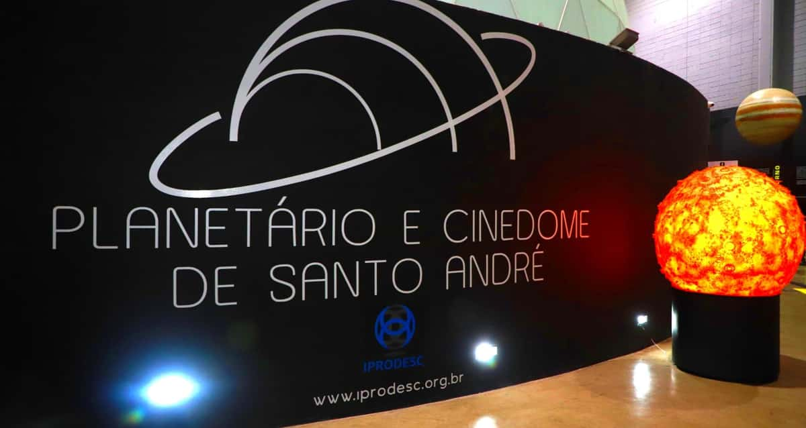
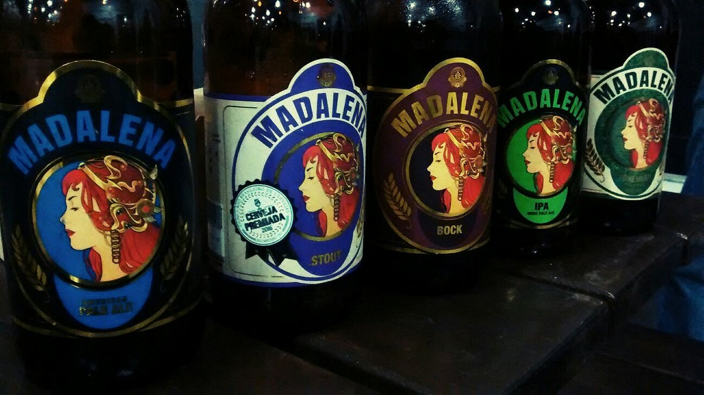

Vamos conhecer mais sobre essa cidade maravilhosa

Como tudo surgiu?
A origem de Santo André remonta ao século XVI, com a fundação da vila de Santo André da Borda do
Campo, em 1553.
A vila foi fundada por João Ramalho, um português que se casou com uma índia da tribo Tupinambá.
João Ramalho e sua esposa, Bartira, estabeleceram-se na região em 1553. Eles foram seguidos por
outros colonos portugueses,
que começaram a cultivar a terra e a criar gado.
Em 1558, o padre Manuel da Nóbrega, fundador da Companhia de Jesus no Brasil, fundou uma capela
na
vila. A capela foi dedicada a Santo André, o apóstolo.
A vila de Santo André da Borda do Campo foi elevada à categoria de cidade em 1889.
O crescimento de Santo André foi impulsionado pela industrialização da região, que começou no
início
do século XX.
A cidade se tornou um importante polo industrial do Brasil, abrigando fábricas de automóveis, de
eletrodomésticos e de outros produtos.
Atualmente, Santo André é uma cidade moderna e desenvolvida, com uma população de cerca de 720
mil
habitantes.
A cidade é um importante centro econômico, cultural e social da região do ABC Paulista.
Aqui estão alguns marcos importantes na história de Santo André:
Santo André é uma cidade com uma história rica e diversificada. A cidade é um importante centro econômico, cultural e social da região do ABC Paulista.
Como Santo André está em 2023?
Santo André é uma cidade moderna e desenvolvida, com uma população de cerca de 720 mil
habitantes. A cidade é um importante
centro econômico, cultural e social da região do ABC Paulista.
A cidade tem uma economia diversificada, com destaque para os setores industrial, comercial e de
serviços.
O setor industrial é o principal empregador da cidade, com destaque para as indústrias
automobilísticas, eletrodomésticas e de alimentos.
A cidade também é um importante centro cultural, com diversos museus, teatros e bibliotecas.
Santo André
também é sede da Universidade Federal do ABC, uma das principais universidades públicas do
Brasil.
A cidade tem uma infraestrutura urbana bem desenvolvida, com um sistema de transporte público
eficiente e uma rede de escolas e hospitais públicos de qualidade.
Nos últimos anos, Santo André tem investido em áreas como educação, cultura e mobilidade urbana.
A cidade tem se esforçado para melhorar a qualidade de vida de seus habitantes e se tornar uma
cidade mais sustentável.
Aqui estão alguns dos principais destaques da cidade de Santo André em 2023:
Santo André é uma cidade em constante crescimento e desenvolvimento. A cidade oferece uma ampla
gama de oportunidades para seus habitantes
e é um importante centro econômico, cultural e social da região do ABC Paulista.
Alguns dos principais desafios que a cidade enfrenta em 2023 são:
A cidade está trabalhando para enfrentar esses desafios e melhorar a qualidade de vida de seus habitantes.
Pontos Turisticos de Santo André
Planetário Johannes Kepler
O Planetário Johannes Kepler, localizado em Santo André, no estado de São Paulo, é um
dos mais modernos do Brasil. Ele foi inaugurado em 2018 e é um espaço dedicado à educação
e à divulgação científica, com foco na astronomia. O planetário possui um sistema de
projeção óptico e digital, fabricado pela empresa alemã Carl Zeiss, que funciona de forma
sincronizada para reproduzir quase 6 mil estrelas pontuais, com brilho, cores e cintilações
semelhantes aos da natureza. O planetário também possui um espaço dedicado à observação do céu,
com telescópios de alta potência.
Parque Celso Daniel

O Parque Celso Daniel, localizado em Santo André, no estado de São Paulo, é um dos principais
pontos turísticos e opções de lazer da cidade. O parque foi inaugurado em 1974 e é um espaço
de lazer e recreação, com uma área de 100 mil metros quadrados. O parque é arborizado e possui
diversos equipamentos de lazer, como playground, pista de caminhada, pista de cooper, quadras
poliesportivas, campo de futebol, quiosques e lanchonete. O parque também abriga uma figueira
centenária, tombada como patrimônio cultural da cidade desde 1992. O Parque Celso Daniel é um
espaço importante para a população de Santo André. Ele é um local de lazer e recreação para
pessoas de todas as idades.
Vila Ferroviária de Paranapiacaba

A Vila Ferroviária de Paranapiacaba, localizada em Santo André, no estado de São Paulo, é um
importante patrimônio histórico e cultural do Brasil. Ela foi fundada em 1867 pela São Paulo
Railway Company, uma empresa inglesa que construiu a primeira ferrovia do Brasil, que ligava
São Paulo ao porto de Santos. A vila foi construída para abrigar os funcionários da ferrovia e
suas famílias. Ela é um exemplo bem preservado da arquitetura ferroviária inglesa do século XIX.
A Vila Ferroviária de Paranapiacaba é um importante destino turístico. Ela é um local
encantador,
com suas casas de madeira, suas ruas arborizadas e sua paisagem natural.
Sabina

O Parque Sabina Escola Parque do Conhecimento é um museu de ciências localizado em Santo André, no
estado de São Paulo. Ele foi inaugurado em 2007 e é um espaço de educação e cultura, com foco na
ciência e na tecnologia. O parque possui uma área de 22 mil metros quadrados e abriga diversos
espaços interativos, como: Aquário, Terrário, Laboratórios, Planetário e Espaço Maker
Parque Antônio Fláquer Ipiranguinha

O Parque Antônio Fláquer Ipiranguinha, também conhecido como Parque Ipiranguinha, é um parque
municipal
localizado em Santo André, no estado de São Paulo. Ele foi inaugurado em 1974 e é um espaço de
lazer e
recreação, com uma área de 30 mil metros quadrados. O parque é arborizado e possui diversos
equipamentos
de lazer, como playground, pista de caminhada, pista de cooper, quadras poliesportivas, campo de
futebol,
quiosques e lanchonete. O parque também abriga um lago, onde é possível praticar pesca e
passeios de
pedalinho. O Parque Ipiranguinha é um espaço importante para a população de Santo André. Ele é
um local
de lazer e recreação para pessoas de todas as idades.
Cervejaria Premium Paulista

A Cervejaria Premium é uma cervejaria artesanal localizada em Santo André, no estado de São
Paulo.
Ela foi fundada em 2015 e produz uma variedade de cervejas, incluindo pilsen, pale ale, IPA e
stout. A
cervejaria está localizada no Parque Antônio Fláquer Ipiranguinha, um parque municipal da
cidade. Ela
possui um espaço para produção de cerveja, um bar e uma loja de produtos cervejeiros. A
Cervejaria
Premium Ipiranguinha oferece diversos tipos de cervejas, que são produzidas com ingredientes de
alta qualidade. A cervejaria também oferece um ambiente agradável para degustar as cervejas e
conhecer
mais sobre a produção de cerveja artesanal.
Atrium Shopping

O Atrium Shopping é um shopping center localizado na cidade de Santo André, no estado de São
Paulo. Ele
foi inaugurado em 2007 e é um dos principais centros comerciais da região do ABC Paulista. O
shopping
possui uma área de 46 mil metros quadrados e abriga mais de 200 lojas, incluindo lojas de
roupas,
calçados, acessórios, eletrônicos, serviços e entretenimento. O shopping também possui um cinema
com
10 salas de exibição, um supermercado e uma praça de alimentação. O Atrium Shopping é um local
popular
para compras, lazer e entretenimento. Ele é um destino para pessoas de todas as idades e de
todas as
classes sociais.
Shopping ABC

O Shopping ABC é um shopping center localizado na cidade de Santo André, no estado de São Paulo.
Ele foi
inaugurado em 1996 e é um dos principais centros comerciais da região do ABC Paulista. O
shopping possui
uma área de 87 mil metros quadrados e abriga mais de 300 lojas, incluindo lojas de roupas,
calçados,
acessórios, eletrônicos, serviços e entretenimento. O shopping também possui um cinema com 12
salas de
exibição, um supermercado e uma praça de alimentação. O Shopping ABC é um local popular para
compras,
lazer e entretenimento. Ele é um destino para pessoas de todas as idades e de todas as classes
sociais.
Parque Regional das Crianças

O Parque Regional das Crianças, também conhecido como Parque Palhaço Estremilique, é um parque
municipal
localizado em Santo André, no estado de São Paulo. Ele foi inaugurado em 1994 e é um espaço de
lazer e
recreação para crianças de todas as idades. O parque possui uma área de 20 mil metros quadrados
e abriga
diversos equipamentos de lazer, como playground, pista de caminhada, pista de cooper, quadras
poliesportivas,
campo de futebol, quiosques e lanchonete. O parque também abriga um lago, onde é possível
praticar pesca
e passeios de pedalinho. O Parque Regional das Crianças é um espaço importante para a população
de
Santo André. Ele é um local de lazer e recreação para crianças de todas as idades.